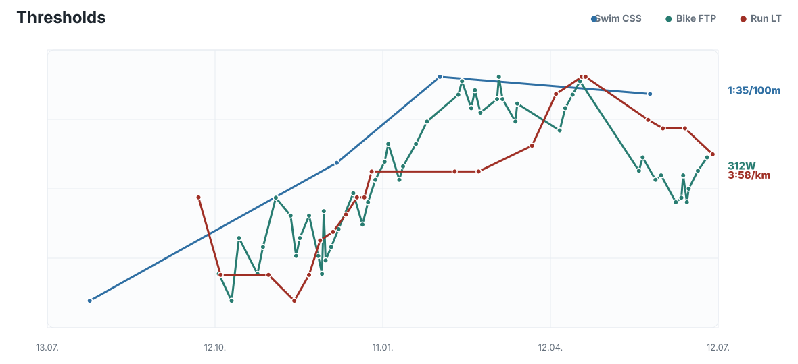
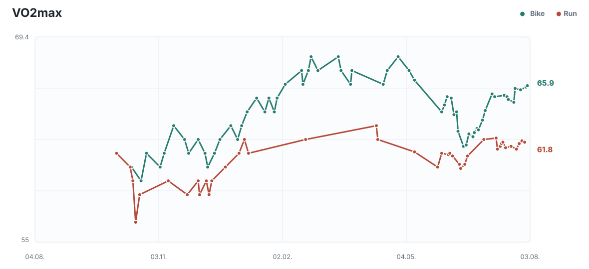
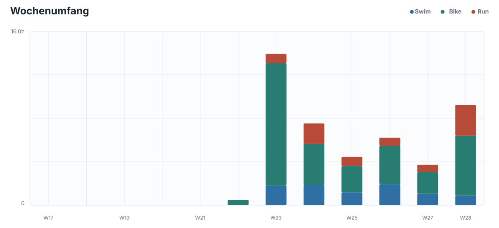
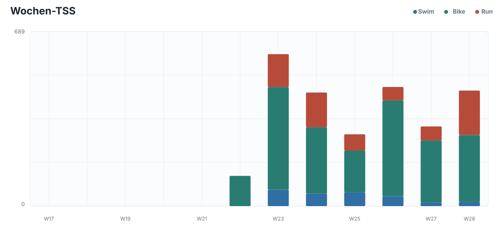
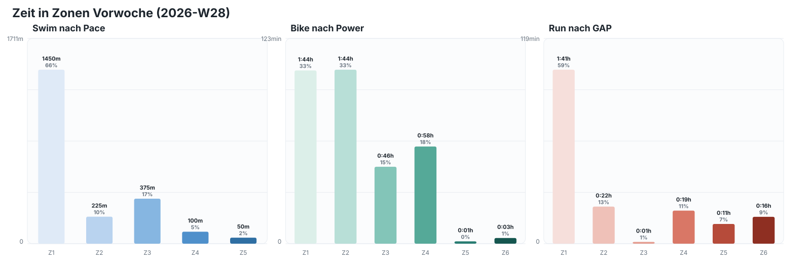
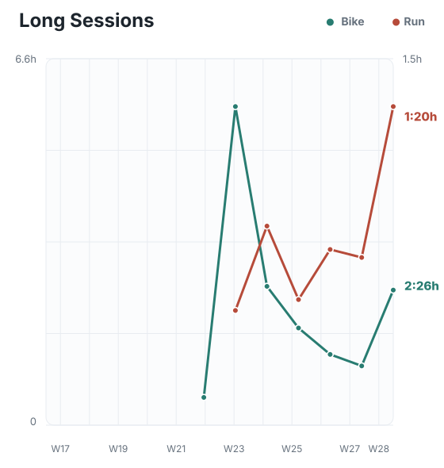
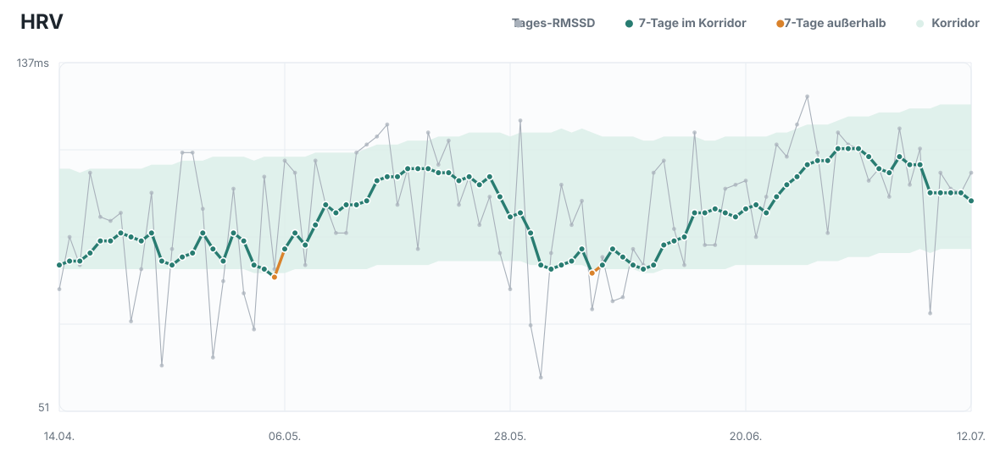
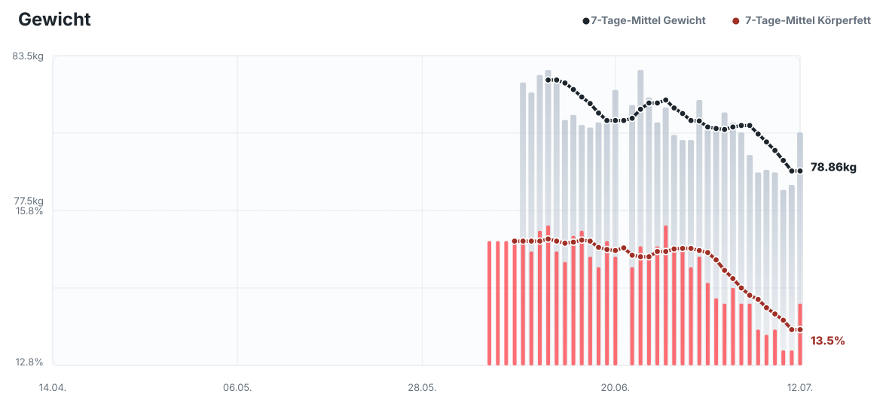
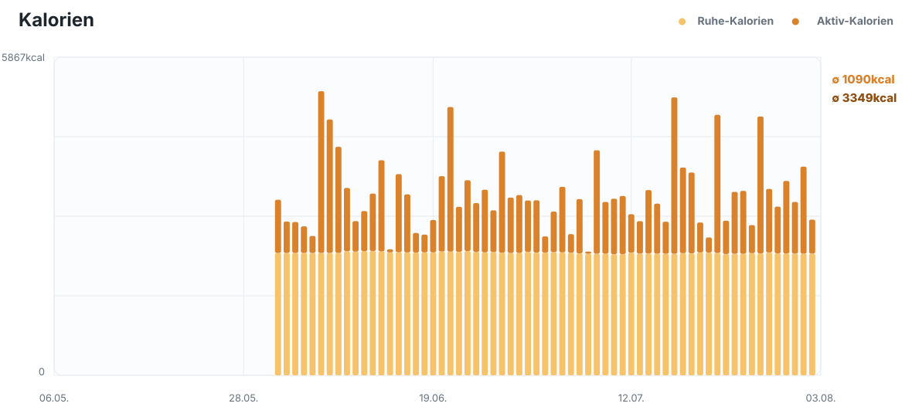

Mo 2026-07-13
Basic
40min @5:05/km
2026-07-13 bis 2026-07-19
40min @5:05/km
1:15h @5:05/km
W28 führte nach dem zweigeteilten MIT-Block wie geplant zurück zu einer gemischten Struktur aus Schwelle und längerer Ausdauer. Insgesamt wurden 5:32h Rad, 2:49h Lauf und 0:53h Schwimmen mit 455,6 TSS erfasst. Die vier Bike-Threshold-Intervalle am Montag wurden sehr stabil mit jeweils 304W gefahren und setzten den ersten intensiven Reiz der Woche. Das Long Bike am Mittwoch blieb mit 210W im Mittel und 217W NP kontrolliert, zeigte mit 5,1% aber bereits moderate HR-Drift. Der Long Run am Freitag war bei 5:04/km GAP und 124bpm grundsätzlich locker, die deutliche Drift von 13,7% spricht jedoch gegen eine aggressive Verlängerung des Long Runs in der Folgewoche. Der abschließende Threshold Run am Sonntag wurde mit 3x12min vollständig absolviert und zeigte keinen erkennbaren Einbruch, lag GAP-basiert mit 13:38min in Z5/Z6 und maximal 163bpm aber deutlich über einem rein kontrollierten Schwellenreiz. Mit 58 TSS, Aerobic Training Effect 3,5 und Anaerobic Training Effect 0,8 war er ein wirksamer, aber ausreichend harter Wochenabschluss.
Das Schwimmen blieb mit 2200m und überwiegend langsamer als Z2 hinter dem geplanten Hauptset zurück; zusätzlich wurden nach etwa 20 Minuten beidseitige Beinkrämpfe gemeldet. Deshalb sollten die nächsten Schwimmeinheiten über kurze, technisch saubere Wiederholungen mit Pausen gesteuert werden, statt die CSS-Pace zu erzwingen. Die Health-Werte am 2026-07-12 sind insgesamt stabil: Tages-HRV 110ms und 7-Tage-HRV 103ms liegen im Korridor, Ruhepuls 38bpm und 8:16h Schlaf bei Score 90 zeigen keine akute Warnlage. Die 9.375 Schritte entsprechen keiner außergewöhnlich hohen Alltagsbelastung. Nach dem Sonntagslauf liegen ATL 58, CTL 55, TSB -3 und ACR 1.064 weiterhin im kontrollierten Bereich. Der schnelle Rückgang des 7-Tage-Gewichtsmittels auf 78,86kg bleibt relevant und spricht dafür, die energiereiche W29 mit zwei langen Radtagen nicht durch ein großes Kaloriendefizit zu begleiten.
Für W29 ersetzen die lockeren Gruppenfahrten am Freitag und Samstag gemeinsam das normale Long Bike und das Basic Bike; ein zusätzliches Long Bike würde denselben Reiz unnötig verdreifachen. Mario meldet am 2026-07-12 weiterhin einen sehr starken subjektiven Zustand und möchte auch montags trainieren. Ein wirklich lockerer Basic Run am Montag ist vertretbar, solange er nach dem harten Sonntagslauf nicht progressiv gelaufen wird; der Long Run am Dienstag bleibt ebenfalls kontrolliert und wird nicht verlängert. Der Sprinttriathlon am Sonntag übernimmt bereits einen weiteren intensiven sportartspezifischen Reiz. Auf ausdrücklichen Athletenwunsch bleibt am Donnerstag dennoch ein Threshold Run bestehen, dessen Arbeitsumfang mit 3x8min bewusst deutlich kürzer als die 3x12min vom Sonntag ausfällt und kontrolliert gelaufen werden soll. Zwei Schwimmeinheiten und ein Bike-Threshold-Training decken die übrigen wesentlichen Reize ab, ohne ein drittes langes Radtraining zu erzwingen. Diese Struktur hält die Ironman-relevante Ausdauerarbeit hoch, berücksichtigt aber auch, dass Nizza erst in neun Wochen und das priorisierte Ironman-Ziel erst 2027 ansteht.











